| Nombre | Posición | Edad | Bibliografía | Portada |
|---|---|---|---|---|
| Alexis Vega | Delantero | 27 | Extremo del Toluca, conocido por su regate y disparo de media distancia. | 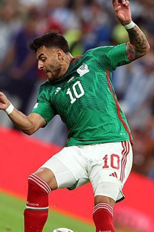 |
| Guillermo Ochoa | Portero | 40 | Veterano portero de la selección, actualmente en la Serie A de Italia. | 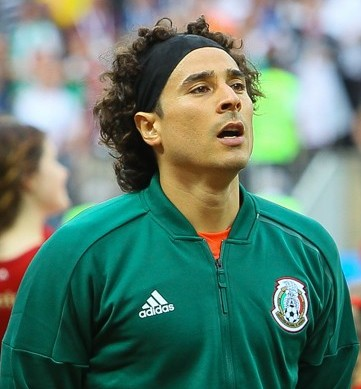 |
| Luis Ángel Malagón | Portero | 28 | Arquero del América, consolidado como sucesor de Ochoa en la portería. | 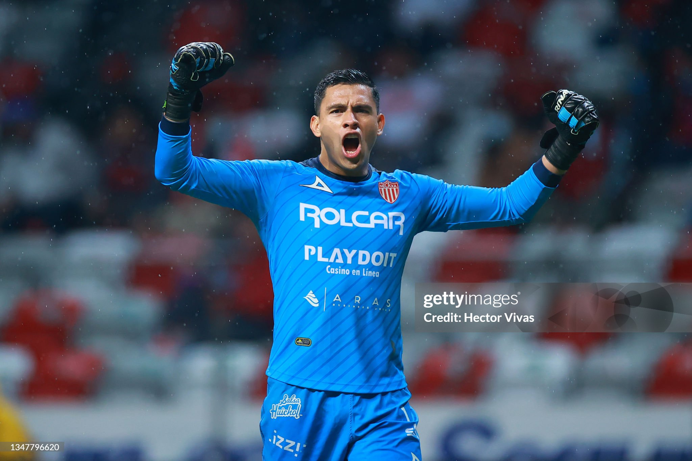 |
| Luis Chávez | Mediocampista | 29 | Mediocampista del Dinamo Moscú, reconocido por su gran pegada en tiros libres. | 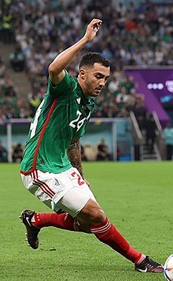 |
| Carlos Huerta | Delantero | 23 | Extremo ofensivo con gran proyección, destaca por su velocidad y desborde. | 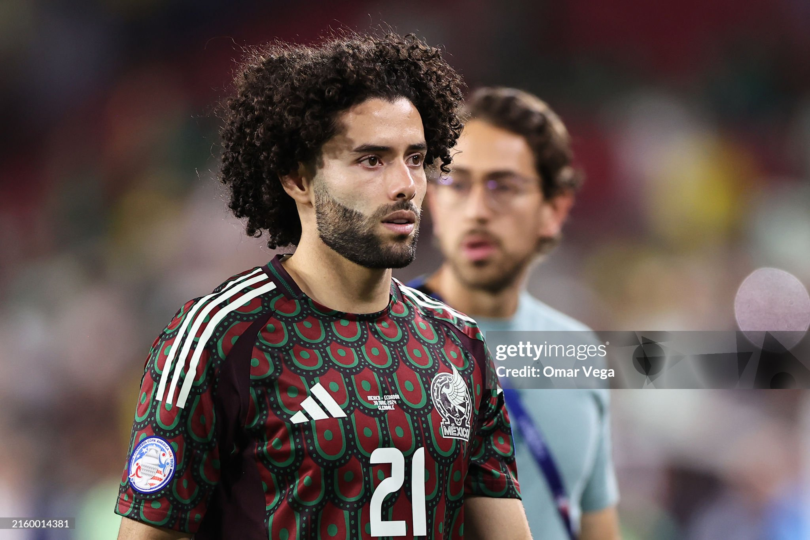 |
| Raúl Jiménez | Delantero | 34 | Delantero con experiencia europea, actual jugador del Fulham en Inglaterra. | 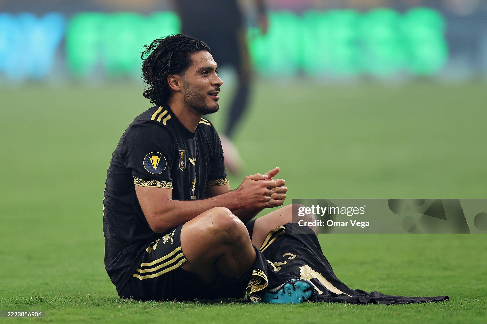 |
| Edson Álvarez | Mediocampista | 27 | Pivote defensivo del West Ham, figura clave en la Premier League. | |
| Jesús Gallardo | Defensor | 30 | Lateral izquierdo del Monterrey, aporta experiencia y velocidad. | 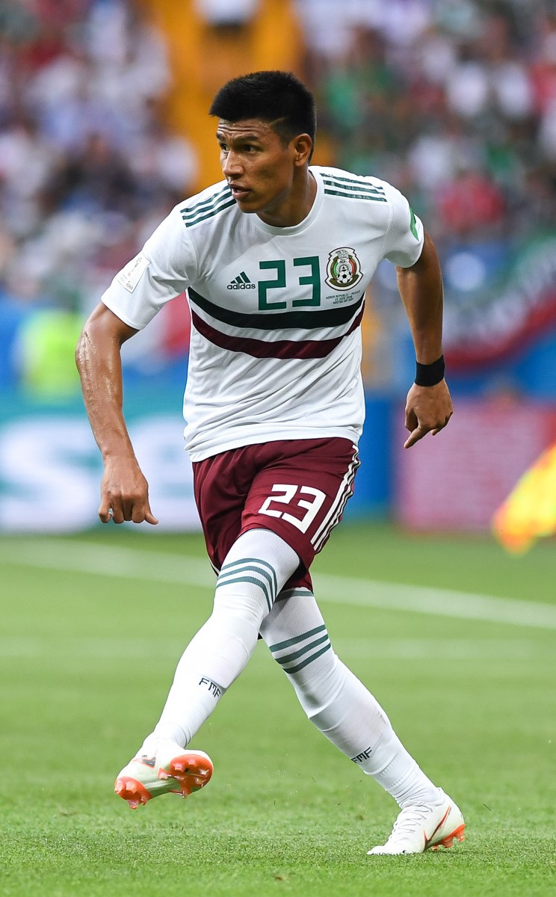 |
| Julián Quiñones Ruiz | Delantero | 28 | Naturalizado mexicano, delantero del América con gran potencia física y gol. | 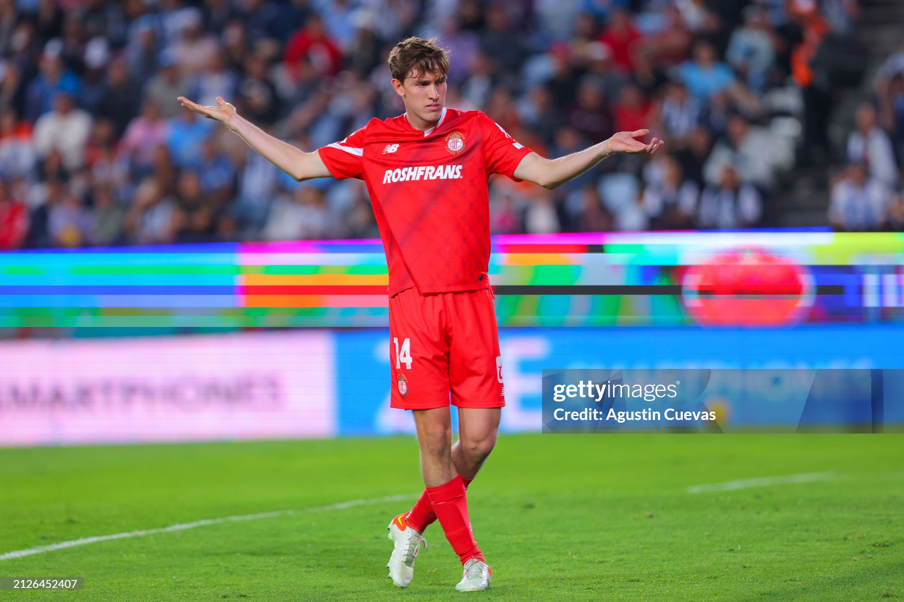 |
| Hirving Lozano | Delantero | 30 | Extremo veloz que juega en la MLS, ex Napoli y PSV Eindhoven. | 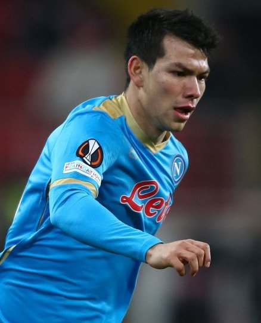 |
| Roberto Alvarado | Mediocampista | 26 | Volante del Guadalajara, versátil y con buena capacidad ofensiva. | 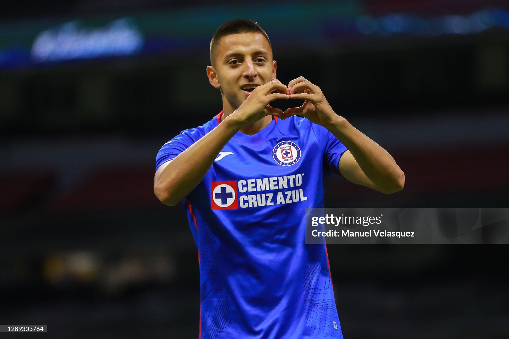 |
| Johan Vásquez | Defensor | 26 | Defensa central del Genoa en la Serie A, sólido y con buena salida de balón. | 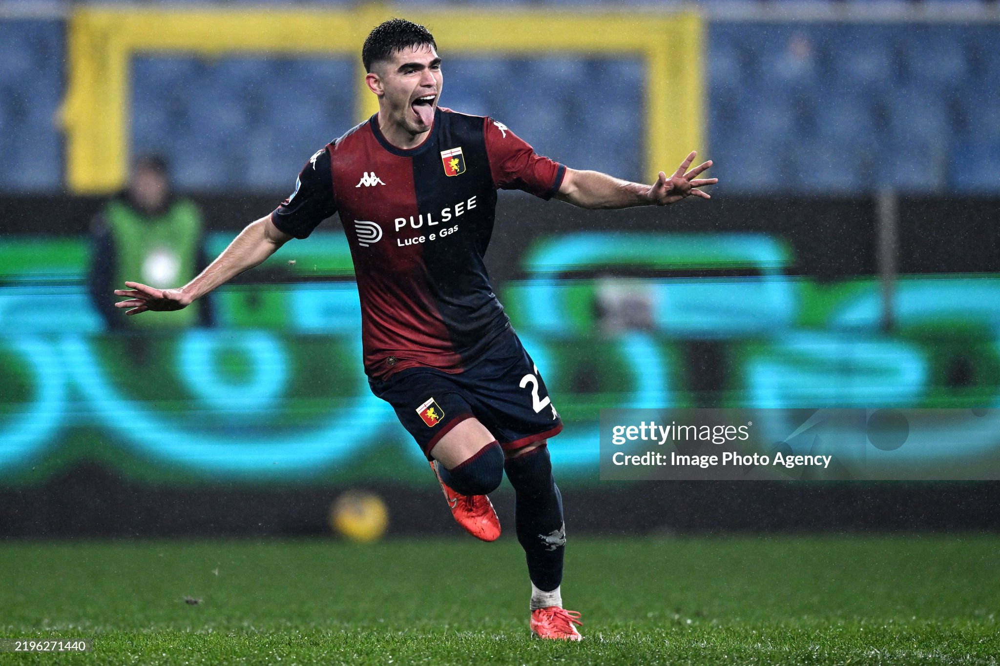 |